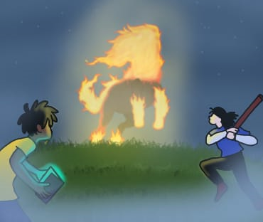
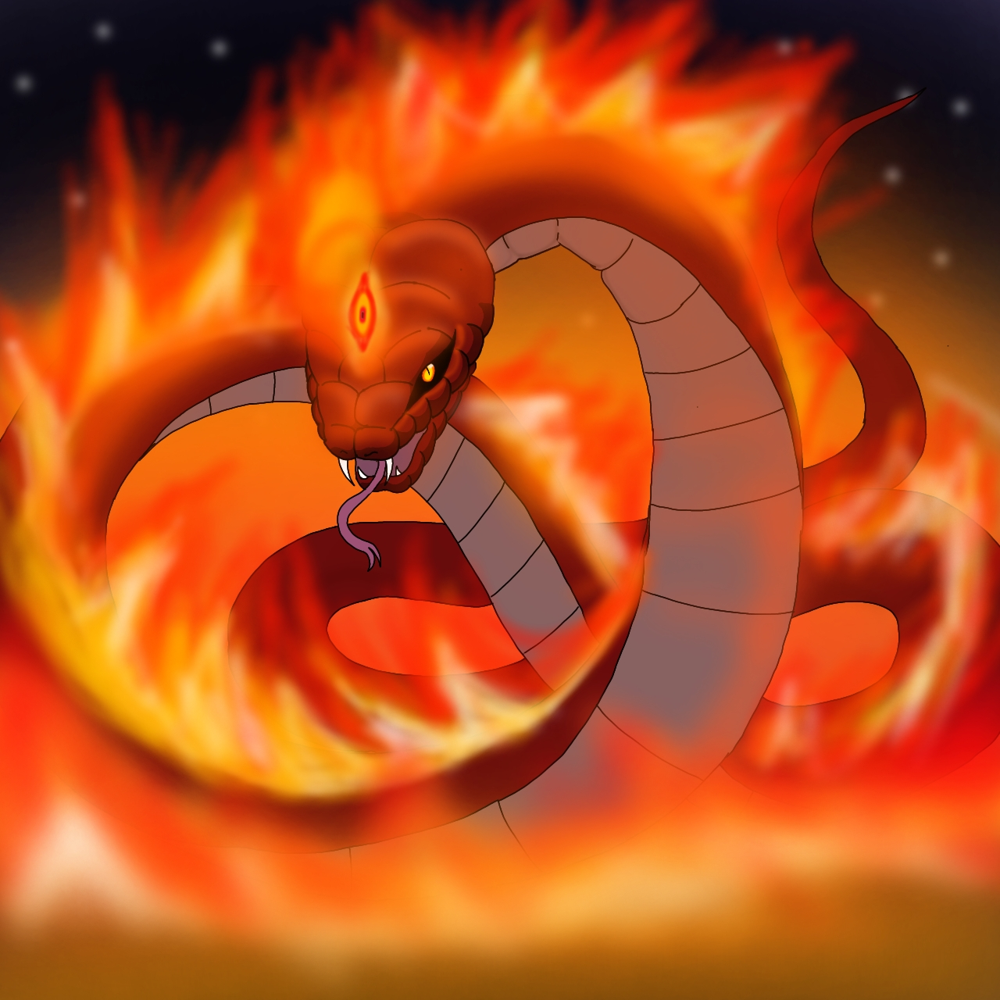
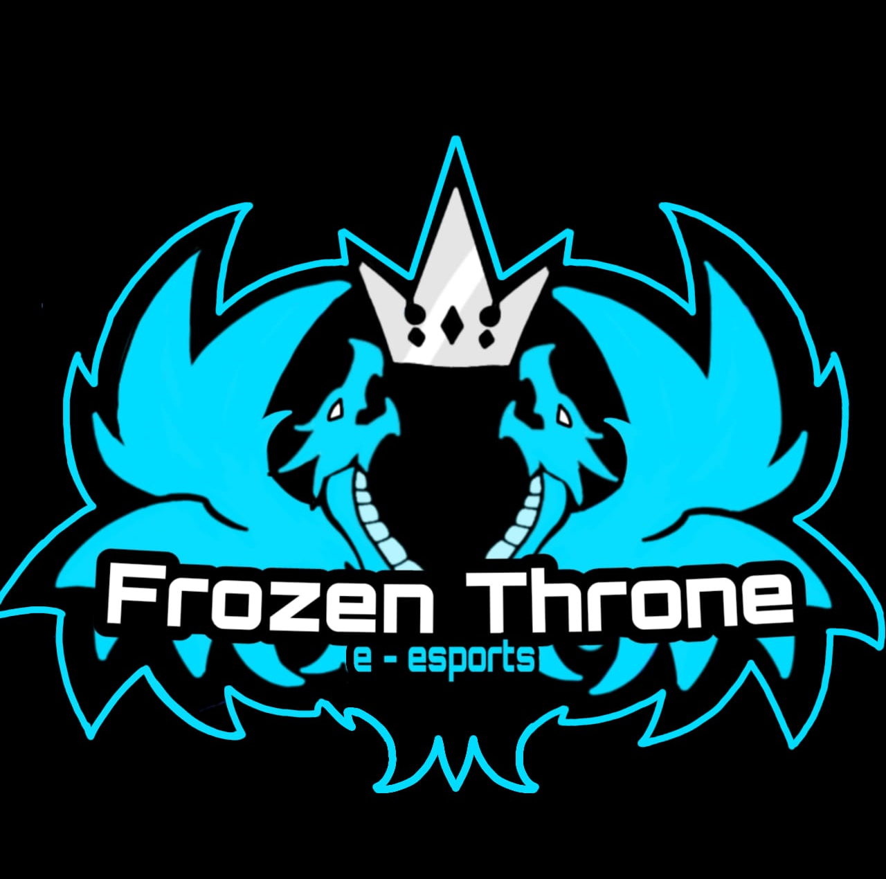
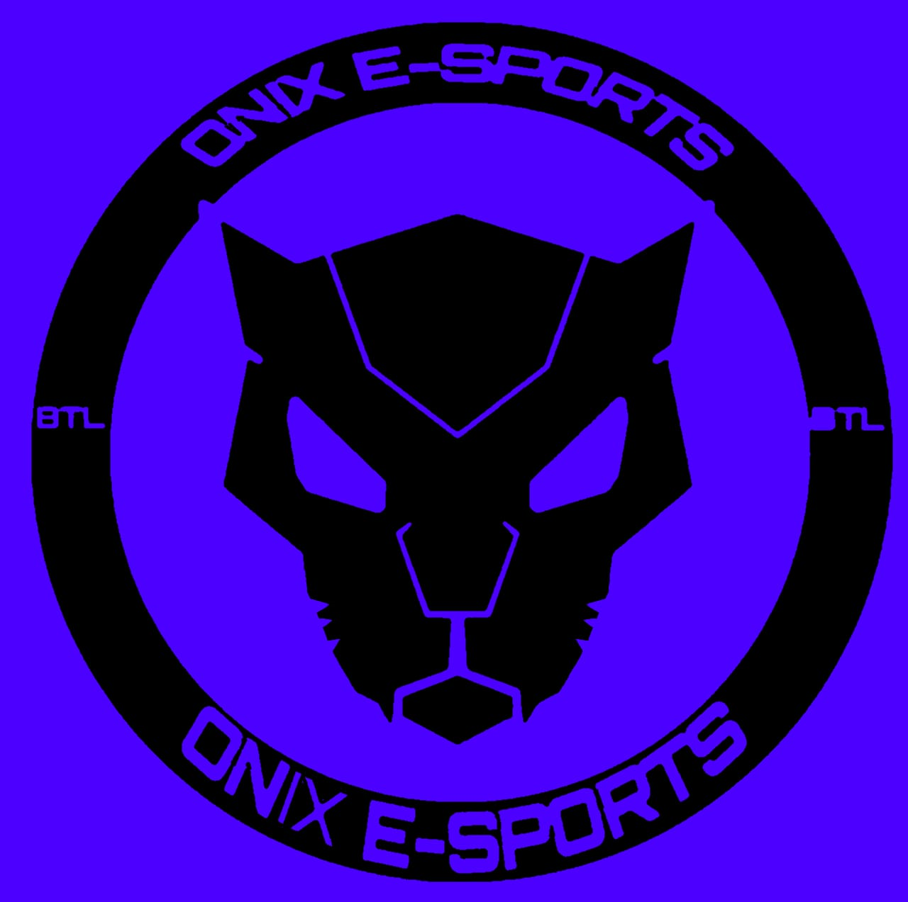
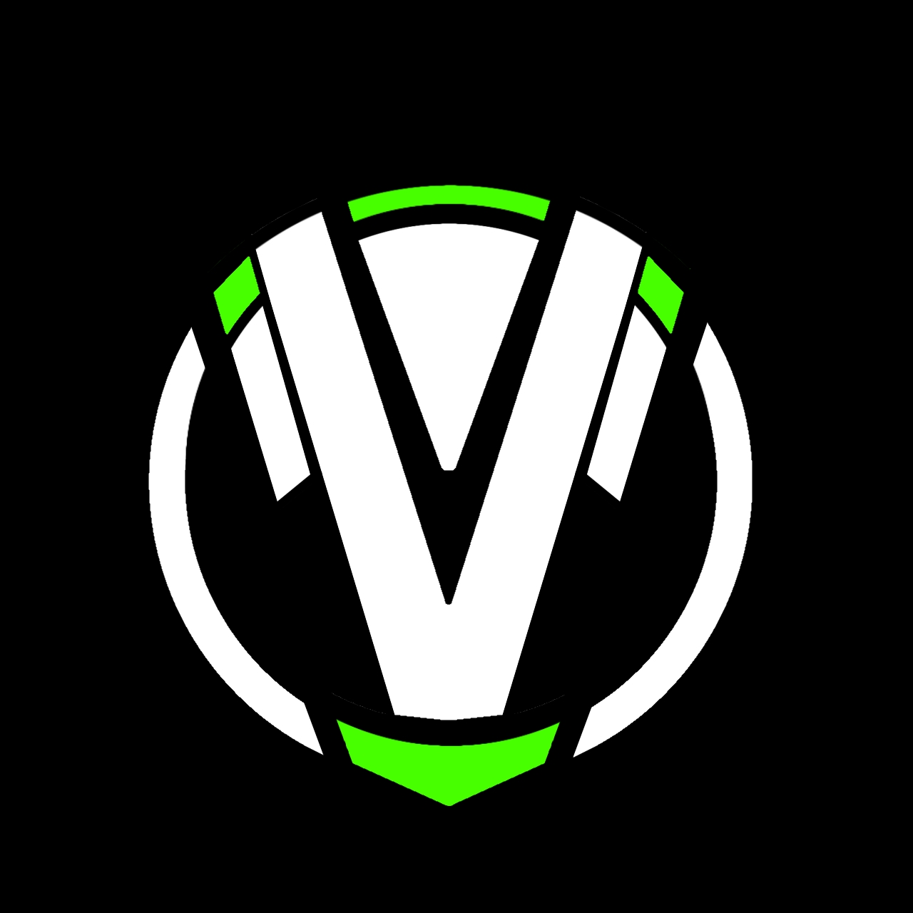

Conheça mais sobre mim
Eu nasci em 16/02/2003 sou de aquário apesar de não acreditar em signos acho que sigo bem o esteriótipo do aquariano quieto,sou bem reservado,amante de
cultura pop,gosto de coisas como animes,jogos,conteudo geek em geral ,sou de Belo Horizonte,Minas Gerais atualmente moro em vila velha
ES me mudei para poder me descobrir profissionalmente e abordar novas experiencias.Começei minha carreira um pouco antes da pandemia, a area de design e ilustração me chamou atenção,
quando estava no meio do meu curso começou a pandemia e eu comecei a pesquisar e estudar sozinho,
aprendendo,me inspirando em outros designers e aprendendo sobre como entender melhor as necessidades dos clientes,
assim como muitas pessoas na pandemia tive a necessidade de me adaptar a condição de quarentena de varias formas,uma
delas foi obter novos hobbies, um deles foram os jogos,comecei casualmente e ao longo do tempo jogando fui me interessando no cenário
dos e-sports,comecei a fazer banners de campeonatos,logos para times e edições de videos,ao estudar melhor a industria
dos jogos comecei a estudar melhor os jogos na parte mecanica em si,o conceito de animação das skills,hitbox,metas daí
surgiu meu interesse por programaçao e game design, ainda estou tentando ingressar na industria dos jogos,mas sempre
estou disposto a crescer e evoluir proficionalmente já que tenho muito o que desenvolver antes de ingressar na área
que almejo trabalhar,estou me preparando e me desenvolvendo até surgir uma oportunidade,estou aberto a negociações de
prestação de serviços e parcerias, estou ancioso para trabalhar com voce.
Aqui estão algumas das minhas ilustrações:

imagem da capa do meu primero projeto de game design

imagem de um dos personagens do projeto "boitata"

imagem de um dos meus primeiros projetos de design como freelancer

imagem da minha primeira logo de um projeto junto com uma org

imagem de uma logo (fiz apenas para portifolio)